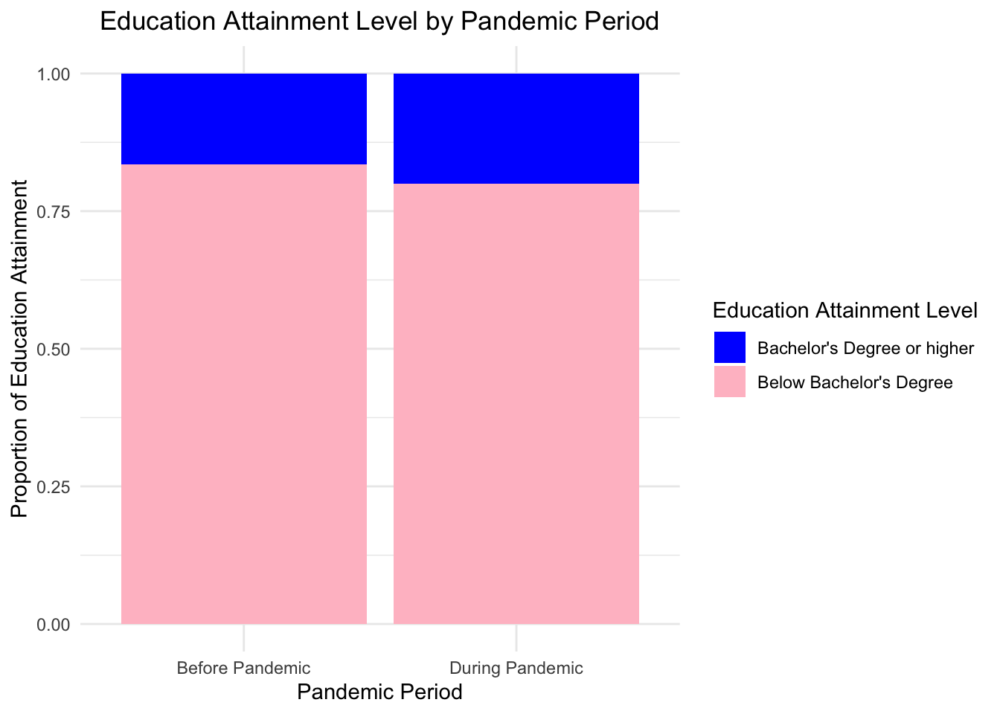
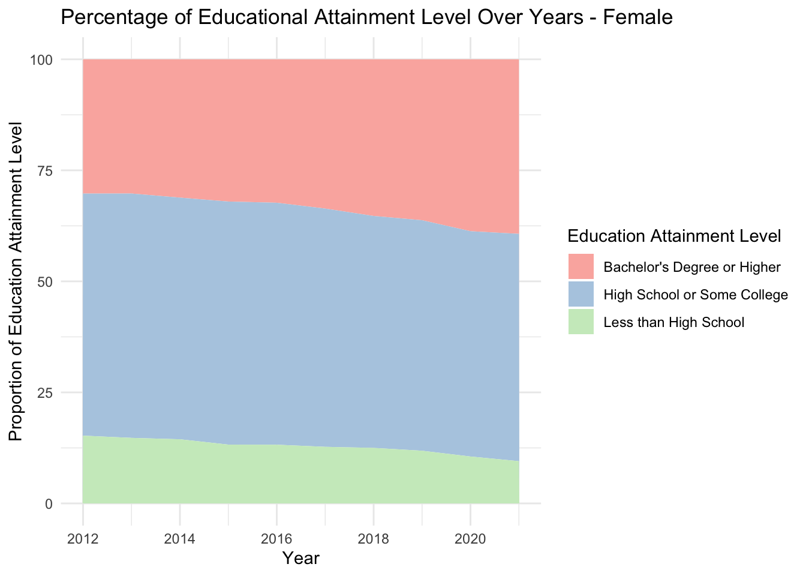
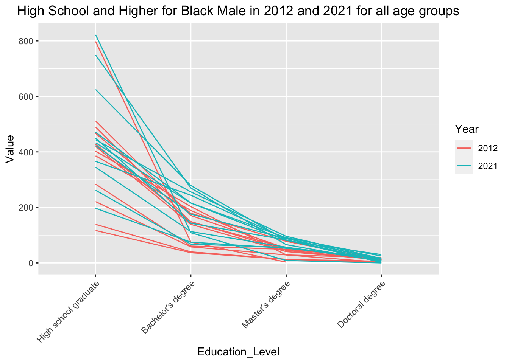
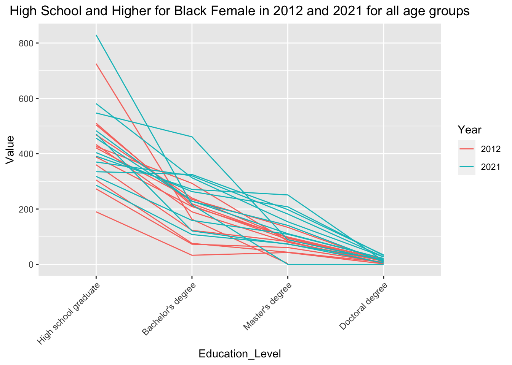

3 Results
Summary: As we employed data visualizations to explore our research questions, we found that both black men and women are achieving higher levels of education than before, with more people earning bachelor’s degrees or higher. Black women, in particular, are outpacing black men in obtaining these degrees. The reasons might be complex, but it could point to better access to higher education for women or a variety of support systems that empower their educational journeys. This progress also highlights a persistent gender gap: while both men and women are moving forward, women are doing so at a faster rate, slightly widening the gap between them and black males. Despite the progress, the majority of both black men and women have not yet achieved education beyond a bachelor’s degree. This suggests there’s still significant room for growth in higher education within the black community. Interestingly, the pandemic period seems to have impacts on educational attainments, with an increase in the proportion of young adults attaining a bachelor’s degree or higher. This might be due to the expansion of online learning or a shift in focus towards education during this global crisis. In summary, while it’s heartening to see the black community making huge progress in obtaining education, we should have continued support and resources to further close the educational gaps and ensure that higher education becomes available for more people in the black community.
3.1 Trend in Higher Education
Research Question: How has the percentage of black male and female individuals with a Bachelor’s degree or higher changed from the decade of discussion?
We created a line plot to explore this research question. From the plot, we observed a clear upward trend in the percentage of both black males and black females attaining a bachelor’s degree or higher over the decade. This suggests improvements in higher educational attainment levels for both genders in the last decades in the black community.
Throughout the entire period, black females consistently show a higher percentage of attaining a bachelor’s degree or higher compared to black males. This indicates that black females may have more access to higher education, or there may be factors that enable higher educational attainment among females in the black community.
The gap between the genders appears to be consistent or slightly widening over the years. The plot does not show any convergence between the genders; instead, the distance between the two lines suggests that the rate of increase in educational attainment may be slightly higher for black females than for black males.
3.2 Trend in No Education History
Research Question: How has the percentage of black male and female individuals with no education changed over the decade?
We created a grouped bar chart to explore this research question. From the plot, we observed that black males have higher percentages of having no education history compared to black females from 2012 to 2014. However, from 2015 to 2020, black female have higher percentages of having no education history compared to black males. This may indicate that black males are more likely to engage in educational opportunities than females since 2015.
However, black female have a lower percentages of having no education history compared to black males in 2021. Besides, comparing to data in 2020, black females have a huge decrease in percentages of having no education history while black males have a huge increase in percentages of having no education history. Thus, we speculates that the women may continuously having a lower percentages of having no education history while black males may have an opposite trend.
Besides, we noticed that the percentages are quite small (less than 0.5%), which indicates that the vast majority of individuals have some educational history.
3.3 Doctoral Degree across Different Age Groups

Research Question: What’s the trend for black males and females to have received a Doctoral degree over the decade for different age groups?
We created two heatmaps for each gender to explore this research question. For both males and females, there seems to be a general increase in the number of individuals with a doctoral degree as the years progress. This trend may indicate an overall improvement in the pursuit of higher education within the black community. While both genders show an increase, the patterns of attainment differ between males and females. Females seem to have a more consistent increase across age groups, whereas males have more pronounced peaks in certain age groups and years such as 2021/50 to 54 years or 2017/30 to 34 years.
3.4 Year to Year Education Attainment Comparison
Research Question: How does black males and females differ in percentages in education attainments? Can we find patterns from a year to year comparison?
We created a group of mosaic plot for each year to explore this research question. From the plot, we observed that the proportion of individuals with below a bachelor’s degree is higher than those with a bachelor’s degree or higher for both genders from 2012 to 2021. This indicates that the majority within both gender groups have not attained a bachelor’s level education.
While both genders show a similar pattern, there are disparities in the proportion of education attainment between males and females. In all years from 2012 to 2021, the proportion of females with a bachelor’s degree or higher is consistently larger than that of males. This observation is consistent with what we saw from the line plot, suggesting that black females are achieving higher education degrees at a higher rate than black males. In other words, there is a relationship between the possibility of attaining higher education (Bachelor’s Degree or higher) with gender.
Lastly, the gap between the proportion of individuals with and without a bachelor’s degree or higher remains significant for both genders, which indicates a persistent educational attainment gap within the black community.
3.5 Covid Impact on Education Attainment

Research Question: During the time of COVID, were there drastic/noticeable pattern in education attainments?
We created a mosaic plot between “Proportion of Education Attainment” and “Pandemic Period” to explore this research question. For this question, we focused on the age groups of “18 to 24 years”, “25 to 29 years”, and “30 to 34 years” to better understand the impact of Covid on the education attainment.
From the graph, we observe that the proportion of individuals with “Bachelor’s Degree or higher” appears to have increased during pandemic comparing to the period before the pandemic. This suggest that there was a notable effect of the pandemic on education attainment levels. This could be attributed to various factors, such as increased availability of online education, changes in job market demands, or a shift in priorities during the pandemic.
3.6 Overall Education Development
3.6.1 Area Plot

Research Question: Overall, how would one best describe the different paths in education development between black males and females over the ten year window?
We created two area plots for both gender to explore this research question. For both males and females, the proportion of those with less than a high school education has decreased over the ten years, which indicates an improvement in basic educational attainment. The proportion of individuals with a high school education or some college has remained relatively stable for both genders. The most significant difference appears in the proportion of individuals with a bachelor’s degree or higher. For females, there’s a visible increase in this category, suggesting that more black females are attaining higher education degrees over time. The proportion for males also increases, although the increase does not appear as obvious as that for females.
From these observations, we conclude that both black males and females have made progress in educational attainment over the past decade. However, females has a faster rate of increase in higher education (bachelor’s degree or higher) than males. This could suggest that while both genders are valuing education more, females might be having more success or opportunities in reaching the highest levels of educational attainment.
3.6.2 Parallel Coordinate Plot


Research Question: Overall, how would one best describe the different paths in education development between black males and females over the ten year window?
We created two parallel coordinate plots for both gender to explore this research question. From the plot, we can see that both black males and females show an significant increase in number of people attaining higher education (Bachelor’s Degree, Master’s degreer, Doctoral Degree) from 2012 to 2021 for all age groups, indicating that the black community receiving better education opportunities. On the other hand, the lines are mixing for the number of High school graduate, indicating that the non-higher education doesn’t improve over the last decades.
On the other hand, notice that the lines for females appear much more scattered compared to males especially for the Master’s degree. Across different age groups, while male across each age group tend to have very similar number of Master’s degree holders, female age groups differ a lot in terms of the number of Master’s degree holders. This is a direct indicator of the different development in higher education in black female as compared to man.